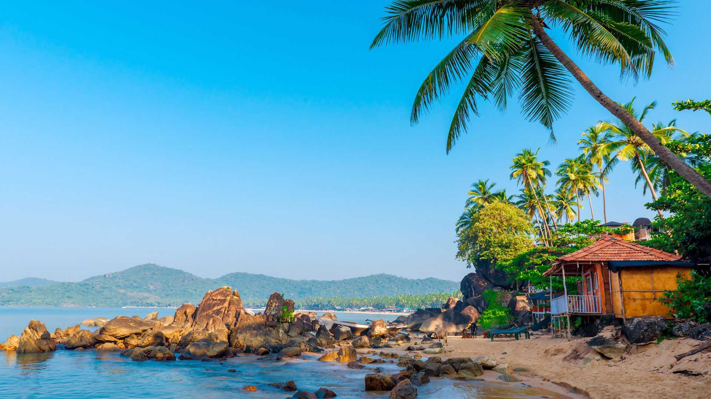

WELCOME TO THE TOURIST PLACES
*INDIAN Tourist Places*
1. Agra
One among best weekend getaways from Delhi & Noida for a two-day trip is Agra. It is home to one of the Seven Wonders of the World situates on the banks of the River Yamuna, Uttar Pradesh, India. Agra is into architectural history with structures like Agra Fort, Fatehpur Sikri etc. The place is one of the most common destinations in the world and one among the famous tourist places in India.
Best time to visit Agra: From October to March

2. Goa
One of the beautiful & also one of the best places to visit in India is Goa as the Goa state has a lot of beaches, cruises, vibrant nightlife, churches and monuments. Goa tops in the list of most popular tourist destinations in India and one has to visit the place once in a lifetime as there are many attractions to see & many things to do here.
Best time to visit Goa is: November – February
 3. Srinagar
Srinagar, capital of Jammu and Kashmir, situated on the banks of river Jhelum and also famous as ‘Heaven on Earth’. It is one among the best holiday destinations in India as every part of Srinagar is like paradise on earth due to its pleasant climate. Famous lakes in Srinagar are Nagin lake and Dal lake. By visiting this place, one can have a memorable trip in a lifetime.
Best time to visit Srinagar: April to October
3. Srinagar
Srinagar, capital of Jammu and Kashmir, situated on the banks of river Jhelum and also famous as ‘Heaven on Earth’. It is one among the best holiday destinations in India as every part of Srinagar is like paradise on earth due to its pleasant climate. Famous lakes in Srinagar are Nagin lake and Dal lake. By visiting this place, one can have a memorable trip in a lifetime.
Best time to visit Srinagar: April to October
4. Leh Ladakh
Leh is a very prominent tourist destination of India, which is famous worldwide due to its charm, magnificent landscape, amazing people and culture. Ladakh also called the paradise of the earth because it affects the tourists who come here with its natural scenery. One should not miss the place at any cost.
Best time to visit Leh Ladakh: June to September
5. Spiti Valley
The place is known to be a cold desert mountain valley located in the Himalayas in the north-east part of the Himachal Pradesh state, which finds at an altitude of 12,500 feet above sea level. The name “Spiti” means “The Middle Land”, it means the land between Tibet and India. It is one among the popular travel destinations in India, and the place is famous for trekking.
Best time to visit Spiti: Mid of May to Mid of October
*AMERICA Tourism Places*
1.
American icons like the Statue of Liberty, the Empire State Building, and Times Square are on every first-time visitor's list. Still, they are just a few of the attractions to see in New York City, America's most populous and most popular city.
2. The lure of Hollywood and its celebrities and the mild breezes from the Pacific Ocean keep Los Angeles on the top of the list of U.S. tourist destinations. Search for Los Angeles's best hotels near the city's famous beaches like Malibu or Santa Monica for a luxurious stay. Go shopping on Rodeo Drive, tour Beverly Hills, and walk along the boardwalk in LA's most famous beachfront neighborhood, Venice Beach.
Continue to 3 of 12 below.
3. Chicago has long been called the "Second City," coming in second to New York City in size and population. A beacon in the Midwest, Chicago is third in population these days, but it has a skyline, restaurants, shopping, museums, and activities that easily rival New York and Los Angeles. If it's baseball season, don't miss seeing a Cubs game at the famous Wrigley Field.
4. Washington, D.C., the capital of the United States, has miles of museums and monuments—almost all of which are free. That's one reason it is one of the most visited cities in the country, especially for families and school groups. It's the perfect place to learn about U.S. history at places like Mount Vernon, George Washington's plantation; Ford's Theater, where Abraham Lincoln was shot; the White House; the Capitol; Georgetown; and Alexandria, along with museums like the Smithsonian, the National Museum of American History, and the National Museum of African-American History and Culture, and the National Museum of the American Indian.
5. Most people go to Las Vegas to try their luck at its famous casinos. But Las Vegas also has blockbuster shows, world-class shopping, and top-notch restaurants, all of which make this city a true desert oasis and a top travel destination. Take a tour of the MGM Grand, try your luck at the Planet Hollywood Hotel and Casino, or walk through the Neon Museum, which showcases iconic Las Vegas signs. And, of course, what happens in Vegas stays in Vegas.
*CHINA Tourism Places*
1.
china icons like the Statue of Liberty, the Empire State Building, and Times Square are on every first-time visitor's list. Still, they are just a few of the attractions to see in New York City, America's most populous and most popular city.
2. The lure of Hollywood and its celebrities and the mild breezes from the Pacific Ocean keep Los Angeles on the top of the list of U.S. tourist destinations. Search for Los Angeles's best hotels near the city's famous beaches like Malibu or Santa Monica for a luxurious stay. Go shopping on Rodeo Drive, tour Beverly Hills, and walk along the boardwalk in LA's most famous beachfront neighborhood, Venice Beach.
Continue to 3 of 12 below.
3. Chinahas long been called the "Second City," coming in second to New York City in size and population. A beacon in the Midwest, Chicago is third in population these days, but it has a skyline, restaurants, shopping, museums, and activities that easily rival New York and Los Angeles. If it's baseball season, don't miss seeing a Cubs game at the famous Wrigley Field.
4. chinawall, D.C., the capital of the United States, has miles of museums and monuments—almost all of which are free. That's one reason it is one of the most visited cities in the country, especially for families and school groups. It's the perfect place to learn about U.S. history at places like Mount Vernon, George Washington's plantation; Ford's Theater, where Abraham Lincoln was shot; the White House; the Capitol; Georgetown; and Alexandria, along with museums like the Smithsonian, the National Museum of American History, and the National Museum of African-American History and Culture, and the National Museum of the American Indian.
5. Most people go to Las Vegas to try their luck at its famous casinos. But Las Vegas also has blockbuster shows, world-class shopping, and top-notch restaurants, all of which make this city a true desert oasis and a top travel destination. Take a tour of the MGM Grand, try your luck at the Planet Hollywood Hotel and Casino, or walk through the Neon Museum, which showcases iconic Las Vegas signs. And, of course, what happens in Vegas stays in Vegas.